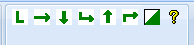

8.2. Review Mode¶
Use review mode to review and correct your translations. In review mode, you look up cells just like in translation mode, except in this case you’re looking up translations instead of source segments.
If you make a correction to the translation in a cell (or textbox), add the translation to Felix by pressing Alt + ↑. This will correct the original translation unit (TU) in your translation memory.

To enter review mode, click on the half-green, half-white button on the right-hand side of the toolbar. To switch back to translation mode, click this button again.
When you’re in translation mode, an asterisk (*) appears next to the menu, and the colors of the toolbar buttons are inverted.

Excel toolbar in review mode
8.2.1. Look up a Translation¶
Select the cell you wish to look up. Then select Felix ‣ Lookup from the menu, or press Alt + L. The translation in your TM matching the cell’s contents will appear in Felix.
Note that unlike Word, formatting information is not preserved for Excel queries.
If a text box is selected, then the contents of the text box will be looked up.
| Toolbar button | |
| Menu command | Look up translation |
| Keyboard shortcut | Alt + L |
8.2.2. Navigate through the Matches¶
Sometimes when you look up a translation in your memory, Felix will have more than one suggestion (if you enable the Translation History feature, however, it will show the exact translation you used for the cell or textbox in question).
The number of suggestions, and the number of the current suggestion, will be shown at the bottom right of the suggestion:

In this example, the first of two suggestions (1/2) is being shown.
To view the next suggestion, click on Next in the Memory window, or from Excel, select Felix >> Next Translation (or press Alt + N).
Tip: The score for the next translation (in this example 68%) is shown next to the Next link.
To view the previous suggestion, click on Prev in the Memory window, or from Excel, select Felix >> Prev Translation (or press Alt + P).
Tip: The score for the previous translation (in this example 68%) is shown next to the Prev link.
Matches will cycle: If you press Next while on the last suggestion, the first suggestion will be shown; likewise, pressing Prev while on the first suggestion will show the last suggestion.
8.2.3. Correct a Translation¶
If the translation needs to be changed, make any corrections, then navigate to another cell (e.g. by pressing the Enter key), and navigate back to the cell you wish to correct (this is because what you type isn’t finalized until the cell loses focus). From the Felix menu, select Set (or press Alt + ↑).
Alternatively, you can select Set and Next (or press Alt + S); this will register the current cell, and look up the next one (scanning left-to-right, top-to-bottom until a cell with text is found or a maximum number of cells has been searched).
8.2.3.1. Correct the translation of the current cell¶
| Toolbar button |  |
| Menu command | Correct Translation |
| Keyboard shortcut | Alt + ↑ |
8.2.3.2. Correct translation and look up next cell¶
| Toolbar button |  |
| Menu command | Correct and Next |
| Keyboard shortcut | Alt + S |
8.2.4. Look up the Next Translation¶
From the Felix menu, select Lookup Next, or press ALT + →.
| Toolbar button |  |
| Menu command | Look up Next |
| Keyboard shortcut | Alt + → |
8.2.5. Restore a Translation from the Memory¶
Select the cell into which you wish to retrieve the current suggestion from Felix. From the Felix menu, select Get (or press Alt + ↓).
Alternatively, you can select Get and Next (or press Alt + G); this will restore the current translation, and look up the next one (scanning left-to-right, top-to-bottom until a cell with text is found or a maximum number of cells has been searched).
8.2.5.1. Restore the translation, and look up the next cell¶
| Toolbar button |  |
| Menu command | Restore Next |
| Keyboard shortcut | Alt + G |
8.2.5.2. Restore the translation¶
| Toolbar button |  |
| Menu command | Restore |
| Keyboard shortcut | Alt + ↓ |
8.2.6. Auto Reflect Edits¶
If you’re using the Translation History feature, you can make edits to your translation, and then automatically reflect all your edits with a single operation.
To use this function, select Felix ‣ Auto Reflect Edits...:
- Sheet
- The current worksheet
- All Workbooks
- All open workbooks